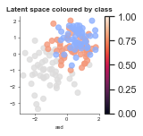

IRIS dataset¶
Example using IRIS dataset¶
[1]:
import os
import shutil
import tempfile
import unittest
import pandas as pd
import seaborn as snsx
import matplotlib.pyplot as plt
import numpy as np
from scivae import Optimiser, VAE, Validate
from sciviso import Scatterplot
# Set the location of the mnist data
data_dir = '~/Documents/code/scivae_public/tests/data/'
loss = {'loss_type': 'mse', 'distance_metric': 'mmd', 'mmd_weight': 1}
encoding = {'layers':[{'num_nodes': 3, 'activation_fn': 'selu'}]}
decoding = {'layers': [{'num_nodes': 3, 'activation_fn': 'selu'}]}
latent = {'num_nodes': 2}
optimisers = {'name': 'adam', 'params': {}}
config = {'loss': loss, 'encoding': encoding, 'decoding': decoding, 'latent': latent, 'optimiser': optimisers}
# Path to the data
data = f'{data_dir}iris.csv'
# Build a simple vae to learn the relations in the iris dataset
df = pd.read_csv(data)
# Set up what the columns are
value_cols = ['sepal_length', 'sepal_width', 'petal_length', 'petal_width']
vae = VAE(df[value_cols].values, df[value_cols].values, df['label'].values, config, 'vae')
vae.encode('default')
# Lets have a look at a scatterplot version & apply the class colours to our plot
encoding = vae.get_encoded_data()
decoding = vae.decoder.predict(encoding)
None
Model: "encoder"
__________________________________________________________________________________________________
Layer (type) Output Shape Param # Connected to
==================================================================================================
default_input (InputLayer) [(None, 4)] 0
__________________________________________________________________________________________________
dense (Dense) (None, 3) 15 default_input[0][0]
__________________________________________________________________________________________________
z_mean (Dense) (None, 2) 8 dense[0][0]
__________________________________________________________________________________________________
z_log_sigma (Dense) (None, 2) 8 dense[0][0]
__________________________________________________________________________________________________
z (Lambda) (None, 2) 0 z_mean[0][0]
z_log_sigma[0][0]
==================================================================================================
Total params: 31
Trainable params: 31
Non-trainable params: 0
__________________________________________________________________________________________________
Model: "decoder"
_________________________________________________________________
Layer (type) Output Shape Param #
=================================================================
z_sampling (InputLayer) [(None, 2)] 0
_________________________________________________________________
dense_1 (Dense) (None, 3) 9
_________________________________________________________________
dense_2 (Dense) (None, 4) 16
=================================================================
Total params: 25
Trainable params: 25
Non-trainable params: 0
_________________________________________________________________
Model: "vae_scivae"
__________________________________________________________________________________________________
Layer (type) Output Shape Param # Connected to
==================================================================================================
default_input (InputLayer) [(None, 4)] 0
__________________________________________________________________________________________________
encoder (Functional) [(None, 2), (None, 2 31 default_input[0][0]
__________________________________________________________________________________________________
decoder (Functional) (None, 4) 25 encoder[0][2]
__________________________________________________________________________________________________
dense (Dense) (None, 3) 15 default_input[0][0]
__________________________________________________________________________________________________
z_mean (Dense) (None, 2) 8 dense[0][0]
__________________________________________________________________________________________________
z_log_sigma (Dense) (None, 2) 8 dense[0][0]
__________________________________________________________________________________________________
z (Lambda) (None, 2) 0 z_mean[0][0]
z_log_sigma[0][0]
__________________________________________________________________________________________________
tf_op_layer_Shape (TensorFlowOp [(2,)] 0 z[0][0]
__________________________________________________________________________________________________
tf_op_layer_strided_slice (Tens [()] 0 tf_op_layer_Shape[0][0]
__________________________________________________________________________________________________
tf_op_layer_Pack (TensorFlowOpL [(2,)] 0 tf_op_layer_strided_slice[0][0]
__________________________________________________________________________________________________
tf_op_layer_RandomStandardNorma [(None, 2)] 0 tf_op_layer_Pack[0][0]
__________________________________________________________________________________________________
tf_op_layer_Mul (TensorFlowOpLa [(None, 2)] 0 tf_op_layer_RandomStandardNormal[
__________________________________________________________________________________________________
tf_op_layer_Add (TensorFlowOpLa [(None, 2)] 0 tf_op_layer_Mul[0][0]
__________________________________________________________________________________________________
tf_op_layer_Shape_1 (TensorFlow [(2,)] 0 tf_op_layer_Add[0][0]
__________________________________________________________________________________________________
tf_op_layer_Shape_3 (TensorFlow [(2,)] 0 tf_op_layer_Add[0][0]
__________________________________________________________________________________________________
tf_op_layer_Shape_2 (TensorFlow [(2,)] 0 tf_op_layer_Add[0][0]
__________________________________________________________________________________________________
tf_op_layer_Shape_4 (TensorFlow [(2,)] 0 z[0][0]
__________________________________________________________________________________________________
tf_op_layer_Shape_6 (TensorFlow [(2,)] 0 z[0][0]
__________________________________________________________________________________________________
tf_op_layer_Shape_5 (TensorFlow [(2,)] 0 z[0][0]
__________________________________________________________________________________________________
tf_op_layer_Shape_7 (TensorFlow [(2,)] 0 tf_op_layer_Add[0][0]
__________________________________________________________________________________________________
tf_op_layer_Shape_9 (TensorFlow [(2,)] 0 tf_op_layer_Add[0][0]
__________________________________________________________________________________________________
tf_op_layer_Shape_8 (TensorFlow [(2,)] 0 z[0][0]
__________________________________________________________________________________________________
tf_op_layer_strided_slice_1 (Te [()] 0 tf_op_layer_Shape_1[0][0]
__________________________________________________________________________________________________
tf_op_layer_strided_slice_3 (Te [()] 0 tf_op_layer_Shape_3[0][0]
__________________________________________________________________________________________________
tf_op_layer_strided_slice_2 (Te [()] 0 tf_op_layer_Shape_2[0][0]
__________________________________________________________________________________________________
tf_op_layer_strided_slice_4 (Te [()] 0 tf_op_layer_Shape_4[0][0]
__________________________________________________________________________________________________
tf_op_layer_strided_slice_6 (Te [()] 0 tf_op_layer_Shape_6[0][0]
__________________________________________________________________________________________________
tf_op_layer_strided_slice_5 (Te [()] 0 tf_op_layer_Shape_5[0][0]
__________________________________________________________________________________________________
tf_op_layer_strided_slice_7 (Te [()] 0 tf_op_layer_Shape_7[0][0]
__________________________________________________________________________________________________
tf_op_layer_strided_slice_9 (Te [()] 0 tf_op_layer_Shape_9[0][0]
__________________________________________________________________________________________________
tf_op_layer_strided_slice_8 (Te [()] 0 tf_op_layer_Shape_8[0][0]
__________________________________________________________________________________________________
tf_op_layer_Reshape/shape (Tens [(3,)] 0 tf_op_layer_strided_slice_1[0][0]
tf_op_layer_strided_slice_3[0][0]
__________________________________________________________________________________________________
tf_op_layer_Reshape_1/shape (Te [(3,)] 0 tf_op_layer_strided_slice_2[0][0]
tf_op_layer_strided_slice_3[0][0]
__________________________________________________________________________________________________
tf_op_layer_Reshape_2/shape (Te [(3,)] 0 tf_op_layer_strided_slice_4[0][0]
tf_op_layer_strided_slice_6[0][0]
__________________________________________________________________________________________________
tf_op_layer_Reshape_3/shape (Te [(3,)] 0 tf_op_layer_strided_slice_5[0][0]
tf_op_layer_strided_slice_6[0][0]
__________________________________________________________________________________________________
tf_op_layer_Reshape_4/shape (Te [(3,)] 0 tf_op_layer_strided_slice_7[0][0]
tf_op_layer_strided_slice_9[0][0]
__________________________________________________________________________________________________
tf_op_layer_Reshape_5/shape (Te [(3,)] 0 tf_op_layer_strided_slice_8[0][0]
tf_op_layer_strided_slice_9[0][0]
__________________________________________________________________________________________________
tf_op_layer_Reshape (TensorFlow [(None, 1, None)] 0 tf_op_layer_Add[0][0]
tf_op_layer_Reshape/shape[0][0]
__________________________________________________________________________________________________
tf_op_layer_Tile/multiples (Ten [(3,)] 0 tf_op_layer_strided_slice_2[0][0]
__________________________________________________________________________________________________
tf_op_layer_Reshape_1 (TensorFl [(1, None, None)] 0 tf_op_layer_Add[0][0]
tf_op_layer_Reshape_1/shape[0][0]
__________________________________________________________________________________________________
tf_op_layer_Tile_1/multiples (T [(3,)] 0 tf_op_layer_strided_slice_1[0][0]
__________________________________________________________________________________________________
tf_op_layer_Reshape_2 (TensorFl [(None, 1, None)] 0 z[0][0]
tf_op_layer_Reshape_2/shape[0][0]
__________________________________________________________________________________________________
tf_op_layer_Tile_2/multiples (T [(3,)] 0 tf_op_layer_strided_slice_5[0][0]
__________________________________________________________________________________________________
tf_op_layer_Reshape_3 (TensorFl [(1, None, None)] 0 z[0][0]
tf_op_layer_Reshape_3/shape[0][0]
__________________________________________________________________________________________________
tf_op_layer_Tile_3/multiples (T [(3,)] 0 tf_op_layer_strided_slice_4[0][0]
__________________________________________________________________________________________________
tf_op_layer_Reshape_4 (TensorFl [(None, 1, None)] 0 tf_op_layer_Add[0][0]
tf_op_layer_Reshape_4/shape[0][0]
__________________________________________________________________________________________________
tf_op_layer_Tile_4/multiples (T [(3,)] 0 tf_op_layer_strided_slice_8[0][0]
__________________________________________________________________________________________________
tf_op_layer_Reshape_5 (TensorFl [(1, None, None)] 0 z[0][0]
tf_op_layer_Reshape_5/shape[0][0]
__________________________________________________________________________________________________
tf_op_layer_Tile_5/multiples (T [(3,)] 0 tf_op_layer_strided_slice_7[0][0]
__________________________________________________________________________________________________
tf_op_layer_Tile (TensorFlowOpL [(None, None, None)] 0 tf_op_layer_Reshape[0][0]
tf_op_layer_Tile/multiples[0][0]
__________________________________________________________________________________________________
tf_op_layer_Tile_1 (TensorFlowO [(None, None, None)] 0 tf_op_layer_Reshape_1[0][0]
tf_op_layer_Tile_1/multiples[0][0
__________________________________________________________________________________________________
tf_op_layer_Tile_2 (TensorFlowO [(None, None, None)] 0 tf_op_layer_Reshape_2[0][0]
tf_op_layer_Tile_2/multiples[0][0
__________________________________________________________________________________________________
tf_op_layer_Tile_3 (TensorFlowO [(None, None, None)] 0 tf_op_layer_Reshape_3[0][0]
tf_op_layer_Tile_3/multiples[0][0
__________________________________________________________________________________________________
tf_op_layer_Tile_4 (TensorFlowO [(None, None, None)] 0 tf_op_layer_Reshape_4[0][0]
tf_op_layer_Tile_4/multiples[0][0
__________________________________________________________________________________________________
tf_op_layer_Tile_5 (TensorFlowO [(None, None, None)] 0 tf_op_layer_Reshape_5[0][0]
tf_op_layer_Tile_5/multiples[0][0
__________________________________________________________________________________________________
tf_op_layer_Sub (TensorFlowOpLa [(None, None, None)] 0 tf_op_layer_Tile[0][0]
tf_op_layer_Tile_1[0][0]
__________________________________________________________________________________________________
tf_op_layer_Sub_1 (TensorFlowOp [(None, None, None)] 0 tf_op_layer_Tile_2[0][0]
tf_op_layer_Tile_3[0][0]
__________________________________________________________________________________________________
tf_op_layer_Sub_2 (TensorFlowOp [(None, None, None)] 0 tf_op_layer_Tile_4[0][0]
tf_op_layer_Tile_5[0][0]
__________________________________________________________________________________________________
tf_op_layer_Square (TensorFlowO [(None, None, None)] 0 tf_op_layer_Sub[0][0]
__________________________________________________________________________________________________
tf_op_layer_Square_1 (TensorFlo [(None, None, None)] 0 tf_op_layer_Sub_1[0][0]
__________________________________________________________________________________________________
tf_op_layer_Square_2 (TensorFlo [(None, None, None)] 0 tf_op_layer_Sub_2[0][0]
__________________________________________________________________________________________________
tf_op_layer_Mean (TensorFlowOpL [(None, None)] 0 tf_op_layer_Square[0][0]
__________________________________________________________________________________________________
tf_op_layer_Mean_1 (TensorFlowO [(None, None)] 0 tf_op_layer_Square_1[0][0]
__________________________________________________________________________________________________
tf_op_layer_Mean_2 (TensorFlowO [(None, None)] 0 tf_op_layer_Square_2[0][0]
__________________________________________________________________________________________________
tf_op_layer_Neg (TensorFlowOpLa [(None, None)] 0 tf_op_layer_Mean[0][0]
__________________________________________________________________________________________________
tf_op_layer_Cast (TensorFlowOpL [()] 0 tf_op_layer_strided_slice_3[0][0]
__________________________________________________________________________________________________
tf_op_layer_Neg_1 (TensorFlowOp [(None, None)] 0 tf_op_layer_Mean_1[0][0]
__________________________________________________________________________________________________
tf_op_layer_Cast_1 (TensorFlowO [()] 0 tf_op_layer_strided_slice_6[0][0]
__________________________________________________________________________________________________
tf_op_layer_Neg_2 (TensorFlowOp [(None, None)] 0 tf_op_layer_Mean_2[0][0]
__________________________________________________________________________________________________
tf_op_layer_Cast_2 (TensorFlowO [()] 0 tf_op_layer_strided_slice_9[0][0]
__________________________________________________________________________________________________
tf_op_layer_RealDiv (TensorFlow [(None, None)] 0 tf_op_layer_Neg[0][0]
tf_op_layer_Cast[0][0]
__________________________________________________________________________________________________
tf_op_layer_RealDiv_1 (TensorFl [(None, None)] 0 tf_op_layer_Neg_1[0][0]
tf_op_layer_Cast_1[0][0]
__________________________________________________________________________________________________
tf_op_layer_RealDiv_2 (TensorFl [(None, None)] 0 tf_op_layer_Neg_2[0][0]
tf_op_layer_Cast_2[0][0]
__________________________________________________________________________________________________
tf_op_layer_Exp (TensorFlowOpLa [(None, None)] 0 tf_op_layer_RealDiv[0][0]
__________________________________________________________________________________________________
tf_op_layer_Exp_1 (TensorFlowOp [(None, None)] 0 tf_op_layer_RealDiv_1[0][0]
__________________________________________________________________________________________________
tf_op_layer_Exp_2 (TensorFlowOp [(None, None)] 0 tf_op_layer_RealDiv_2[0][0]
__________________________________________________________________________________________________
tf_op_layer_Mean_3 (TensorFlowO [()] 0 tf_op_layer_Exp[0][0]
__________________________________________________________________________________________________
tf_op_layer_Mean_4 (TensorFlowO [()] 0 tf_op_layer_Exp_1[0][0]
__________________________________________________________________________________________________
tf_op_layer_Mean_5 (TensorFlowO [()] 0 tf_op_layer_Exp_2[0][0]
__________________________________________________________________________________________________
tf_op_layer_Sub_4 (TensorFlowOp [(None, 4)] 0 default_input[0][0]
decoder[0][0]
__________________________________________________________________________________________________
tf_op_layer_AddV2 (TensorFlowOp [()] 0 tf_op_layer_Mean_3[0][0]
tf_op_layer_Mean_4[0][0]
__________________________________________________________________________________________________
tf_op_layer_Mul_1 (TensorFlowOp [()] 0 tf_op_layer_Mean_5[0][0]
__________________________________________________________________________________________________
tf_op_layer_Square_3 (TensorFlo [(None, 4)] 0 tf_op_layer_Sub_4[0][0]
__________________________________________________________________________________________________
tf_op_layer_Sub_3 (TensorFlowOp [()] 0 tf_op_layer_AddV2[0][0]
tf_op_layer_Mul_1[0][0]
__________________________________________________________________________________________________
tf_op_layer_Sum (TensorFlowOpLa [(None,)] 0 tf_op_layer_Square_3[0][0]
__________________________________________________________________________________________________
tf_op_layer_Mul_2 (TensorFlowOp [()] 0 tf_op_layer_Sub_3[0][0]
__________________________________________________________________________________________________
tf_op_layer_AddV2_1 (TensorFlow [(None,)] 0 tf_op_layer_Sum[0][0]
tf_op_layer_Mul_2[0][0]
__________________________________________________________________________________________________
tf_op_layer_Mean_6 (TensorFlowO [()] 0 tf_op_layer_AddV2_1[0][0]
__________________________________________________________________________________________________
add_loss (AddLoss) () 0 tf_op_layer_Mean_6[0][0]
==================================================================================================
Total params: 56
Trainable params: 56
Non-trainable params: 0
__________________________________________________________________________________________________
None
Epoch 1/50
1/3 [=========>....................] - ETA: 0s - loss: 0.4196WARNING:tensorflow:From /Users/ariane/opt/miniconda3/envs/ml/lib/python3.8/site-packages/tensorflow/python/ops/summary_ops_v2.py:1277: stop (from tensorflow.python.eager.profiler) is deprecated and will be removed after 2020-07-01.
Instructions for updating:
use `tf.profiler.experimental.stop` instead.
WARNING:tensorflow:Callbacks method `on_train_batch_end` is slow compared to the batch time (batch time: 0.0011s vs `on_train_batch_end` time: 0.0135s). Check your callbacks.
3/3 [==============================] - 0s 77ms/step - loss: 0.4339 - val_loss: 0.3633
Epoch 2/50
3/3 [==============================] - 0s 6ms/step - loss: 0.3668 - val_loss: 0.3064
Epoch 3/50
3/3 [==============================] - 0s 5ms/step - loss: 0.3500 - val_loss: 0.3857
Epoch 4/50
3/3 [==============================] - 0s 6ms/step - loss: 0.3315 - val_loss: 0.3355
Epoch 5/50
3/3 [==============================] - 0s 5ms/step - loss: 0.3406 - val_loss: 0.2867
Epoch 6/50
3/3 [==============================] - 0s 5ms/step - loss: 0.3339 - val_loss: 0.3230
Epoch 7/50
3/3 [==============================] - 0s 5ms/step - loss: 0.2915 - val_loss: 0.2514
Epoch 8/50
3/3 [==============================] - 0s 5ms/step - loss: 0.3105 - val_loss: 0.2950
Epoch 9/50
3/3 [==============================] - 0s 5ms/step - loss: 0.3038 - val_loss: 0.3697
Epoch 10/50
3/3 [==============================] - 0s 5ms/step - loss: 0.3087 - val_loss: 0.3470
Epoch 11/50
3/3 [==============================] - 0s 5ms/step - loss: 0.3076 - val_loss: 0.2441
Epoch 12/50
3/3 [==============================] - 0s 5ms/step - loss: 0.3188 - val_loss: 0.3241
Epoch 13/50
3/3 [==============================] - 0s 5ms/step - loss: 0.3082 - val_loss: 0.2460
Epoch 14/50
3/3 [==============================] - 0s 5ms/step - loss: 0.2753 - val_loss: 0.2555
Epoch 15/50
3/3 [==============================] - 0s 6ms/step - loss: 0.3008 - val_loss: 0.2844
Epoch 16/50
3/3 [==============================] - 0s 5ms/step - loss: 0.2797 - val_loss: 0.3165
Epoch 17/50
3/3 [==============================] - 0s 5ms/step - loss: 0.2682 - val_loss: 0.2607
Epoch 18/50
3/3 [==============================] - 0s 5ms/step - loss: 0.2741 - val_loss: 0.3532
Epoch 19/50
3/3 [==============================] - 0s 5ms/step - loss: 0.2975 - val_loss: 0.2495
Epoch 20/50
3/3 [==============================] - 0s 5ms/step - loss: 0.2787 - val_loss: 0.2818
Epoch 21/50
3/3 [==============================] - 0s 5ms/step - loss: 0.2918 - val_loss: 0.2713
Epoch 22/50
3/3 [==============================] - 0s 5ms/step - loss: 0.3018 - val_loss: 0.2313
Epoch 23/50
3/3 [==============================] - 0s 6ms/step - loss: 0.2687 - val_loss: 0.2349
Epoch 24/50
3/3 [==============================] - 0s 5ms/step - loss: 0.2718 - val_loss: 0.2182
Epoch 25/50
3/3 [==============================] - 0s 5ms/step - loss: 0.2727 - val_loss: 0.3254
Epoch 26/50
3/3 [==============================] - 0s 5ms/step - loss: 0.2968 - val_loss: 0.2793
Epoch 27/50
3/3 [==============================] - 0s 5ms/step - loss: 0.2697 - val_loss: 0.2168
Epoch 28/50
3/3 [==============================] - 0s 5ms/step - loss: 0.2369 - val_loss: 0.2720
Epoch 29/50
3/3 [==============================] - 0s 5ms/step - loss: 0.2901 - val_loss: 0.2459
Epoch 30/50
3/3 [==============================] - 0s 5ms/step - loss: 0.2622 - val_loss: 0.2434
Epoch 31/50
3/3 [==============================] - 0s 5ms/step - loss: 0.2338 - val_loss: 0.2161
Epoch 32/50
3/3 [==============================] - 0s 5ms/step - loss: 0.2296 - val_loss: 0.2182
Epoch 33/50
3/3 [==============================] - 0s 5ms/step - loss: 0.2128 - val_loss: 0.2354
Epoch 34/50
3/3 [==============================] - 0s 5ms/step - loss: 0.2368 - val_loss: 0.2050
Epoch 35/50
3/3 [==============================] - 0s 5ms/step - loss: 0.2603 - val_loss: 0.2871
Epoch 36/50
3/3 [==============================] - 0s 5ms/step - loss: 0.2147 - val_loss: 0.2242
Epoch 37/50
3/3 [==============================] - 0s 5ms/step - loss: 0.2489 - val_loss: 0.2658
Epoch 38/50
3/3 [==============================] - 0s 5ms/step - loss: 0.1774 - val_loss: 0.1971
Epoch 39/50
3/3 [==============================] - 0s 5ms/step - loss: 0.2037 - val_loss: 0.1627
Epoch 40/50
3/3 [==============================] - 0s 6ms/step - loss: 0.1876 - val_loss: 0.1899
Epoch 41/50
3/3 [==============================] - 0s 6ms/step - loss: 0.1798 - val_loss: 0.1748
Epoch 42/50
3/3 [==============================] - 0s 6ms/step - loss: 0.1795 - val_loss: 0.2002
Epoch 43/50
3/3 [==============================] - 0s 6ms/step - loss: 0.1758 - val_loss: 0.1694
Epoch 44/50
3/3 [==============================] - 0s 6ms/step - loss: 0.1765 - val_loss: 0.1495
Epoch 45/50
3/3 [==============================] - 0s 5ms/step - loss: 0.1619 - val_loss: 0.2283
Epoch 46/50
3/3 [==============================] - 0s 5ms/step - loss: 0.1857 - val_loss: 0.1505
Epoch 47/50
3/3 [==============================] - 0s 5ms/step - loss: 0.1533 - val_loss: 0.1990
Epoch 48/50
3/3 [==============================] - 0s 5ms/step - loss: 0.1561 - val_loss: 0.2161
Epoch 49/50
3/3 [==============================] - 0s 5ms/step - loss: 0.1616 - val_loss: 0.1549
Epoch 50/50
3/3 [==============================] - 0s 5ms/step - loss: 0.1556 - val_loss: 0.1158
Visualise the latent space¶
Visualise and colour the latent space.
[2]:
import seaborn as sns
vis_df = pd.DataFrame()
vis_df['latent_0'] = encoding[:, 0]
vis_df['latent_1'] = encoding[:, 1]
labels = df['label'].values
lut = dict(zip(set(labels), sns.color_palette("coolwarm", len(set(labels)))))
row_colors2 = pd.DataFrame(labels)[0].map(lut)
vis_df['label'] = row_colors2
scatter = Scatterplot(vis_df, 'latent_0', 'latent_1', colour=row_colors2, title='Latent space coloured by class', xlabel='asd')
scatter.plot()
[2]:
<AxesSubplot:title={'center':'Latent space coloured by class'}, xlabel='asd'>

Print out the accuracy¶
Here we just get the accuracy of the encoding space when we use it as features for a classifier.
[3]:
vd = Validate(vae, labels)
print(vd.predict('rf', 'accuracy'))
print(vd.predict('svm', 'balanced_accuracy'))
0.69
0.7106357694592988